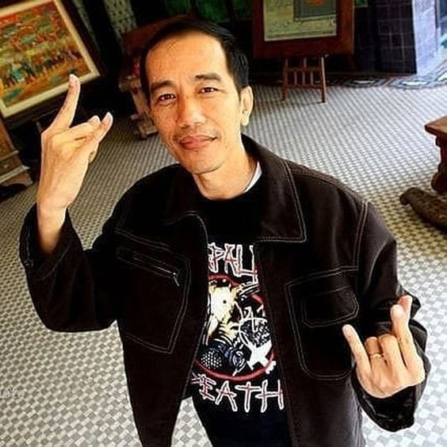

Belajar Bootstrap
Joko Widodo, Presiden Indonesia, dikenal sebagai penggemar musik rock, yang telah menjadi bagian dari identitas dirinya. Ketertarikan Jokowi terhadap musik rock terlihat dari beberapa pernyataan dan aktivitasnya di berbagai kesempatan. Salah satu band rock favoritnya adalah Slank, sebuah band legendaris asal Indonesia yang telah berkarya sejak tahun 1980-an. Jokowi sering menyebutkan bahwa ia menyukai lagu-lagu Slank, yang terkenal dengan liriknya yang menggugah semangat dan kritik sosial.
Selain Slank, Jokowi juga mengagumi band-band rock internasional, termasuk Queen dan Guns N' Roses. Ia pernah menyatakan ketertarikan terhadap musik mereka, menunjukkan bahwa seleranya tidak hanya terbatas pada musik lokal.
Di beberapa acara, Jokowi terlihat menikmati penampilan musik rock, baik itu di festival musik maupun konser. Misalnya, saat menghadiri konser Slank dan band lainnya, ia seringkali terlibat langsung dan menunjukkan antusiasmenya. Ketika ditanya tentang musik yang ia dengarkan, Jokowi sering menekankan bahwa musik rock membangkitkan semangatnya, terutama dalam menghadapi tantangan sebagai pemimpin negara.